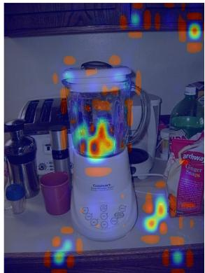

ICML 2026 · P2 · 2026-05-27
AFIP：适合作为 VL 预训练模型视觉接地质量的诊断工具
把 hallucination 与视觉注意力空间不一致、解码时 image-token attention 衰减联系起来。
编号2605.24602
优先级P2
类别ICML 2026
会议arXiv + ICML 2026
方法认为 MLLM hallucination 与 attention distraction 有关，提出 AFIP，通过 cross-head attention enrichment 和 dynamic historical attention enhancement 强化视觉接地。
来源arXiv / OpenReview
先说结论。适合作为 VL 预训练模型视觉接地质量的诊断工具。 把 hallucination 与视觉注意力空间不一致、解码时 image-token attention 衰减联系起来。


核心问题
适合作为 VL 预训练模型视觉接地质量的诊断工具。
方法拆解
认为 MLLM hallucination 与 attention distraction 有关，提出 AFIP，通过 cross-head attention enrichment 和 dynamic historical attention enhancement 强化视觉接地。
主要贡献
把 hallucination 与视觉注意力空间不一致、解码时 image-token attention 衰减联系起来。
实验看点
摘要称多个 benchmark 和模型上无需额外训练即可有效。
局限与读法
主要是 inference-time intervention；不是自监督表征学习方法。